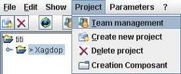
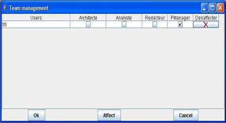

Delete a user from a project
Pre-necessary : Be the manager in the project.
Select in the tree structure the project in which user will be deleted.
In menu « Project », choose menu « Team Management ».

Click on « Disaffect » in front of the user's name

Click on « Ok »